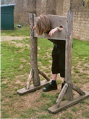

Rédaction
Les mots de la rédaction
Passionnés par le journalisme d'investigation depuis notre plus jeune âge, nous avons créé ce site pour répondre à un réel besoin : celui de fournir une information fiable et précise sur la vie de la L-INFO de l'Université de Franche-Comté.
Découvrez les hommes et les femmes qui composent l'équipe de choc de la Gazette de L-INFO.
Notre rédacteur en chef
Johnny Bigoude
Récemment débarqué de la rédaction d'iTélé suite au scandale Morandini, Johnny insuffle une vision nouvelle et moderne du journalisme au sein de notre rédaction. Leader charismatique et figure incontournable de l'information en France et à l'étranger, il est diplômé de la Harvard Business School of Bullshit, promotion 1997.
Véritable puits de sagesse sans fond, Johnny est LA référence dans la rédaction. Présent dans les locaux du département info, il suit au plus près l'actualité de la Licence, et signe la majorité des articles du journal, en plus d'en tracer la ligne éditoriale.
Nos premiers violons
Alex Kuzbidon
Correspondant à l'étranger
Sans cesse sur les théatres d'opération aux 4 coins du monde, Alex prête régulièrement sa plume à la Gazette de L-INFO pour nous raconter les trépidentes aventures de nos étudiants de Licence en stage à l'étranger.
Il a récemment suivi la trace d'un groupe d'étudiants de L3 en Angleterre et décroché une révélation tout à fait étonnante qui lui vaudra très certainement le prix Pullitzer l'année prochaine.
Equipé des derniers gadgets à la mode dans le domaine des technologies mobiles (très envié de nos sous-fifres Pete et Yves), Alex s'infiltre partout, et approvisionne la rédaction en images les plus époustouflantes venues du monde entier.
Membre co-fondateur de la rédaction avec Johnny, le duo a su imposer la présence de cet OVNI journalistique qu'est notre Gazette au sein du département informatique.
Kelly Diot
Journaliste d'investigation
Ancienne détective privé, Kelly a rejoint l'équipe l'été dernier. Mettant à profit ses acquis d'expérience de sa vie professionnelle antérieure, elle est tout particulièrement attachée aux enquêtes spéciales.
Si ses articles sont rares, ce sont de petits bijoux d'investigation qui sont régulièrement cités en exemple dans toutes les bonnes écoles de journalisme.
Son meilleur article à ce jour reste son enquête sur une filière clandestine d'approvisionnements de sujets d'examens, qui a permis de mettre au jour des pratiques plus que douteuses au sein du département informatique.
Véritable Elise Lucet de notre rédaction, elle n'hésite pas à faire preuve d'une ingéniosité sans égale pour pièger ses cibles et obtenir les confessions de leurs plus noirs secrets.Nos sous-fifres

Pete Heupakeur
Photographe officiel
Equipé de son reflex dernier cri, Pete est l'oeil de la Gazette de L-INFO. Ses clichés originaux viennent parfaitement illustrer les articles magistrement écrits par nos collaborateurs.
Son meilleur cliché reste celui du Président Macron juste après avoir appris qu'il validait sa Licence d'Informatique.
Yves Jourdelesse
Typographe et webmaster
Responsable de l'édition numérique du journal, Yves donne vie à nos articles dans un style CSS inimitable. Ancien étudiant de Licence Informatique (comme le laisse deviner son style vestimentaire et capillaire négligé), Yves travaille d'arrache-pied pour offrir monde extérieur un contenu d'un rendu impeccable.
Puni suite à un choix d'illustration 🔞, Yves passe désormais la moitié de son temps de travail au pilori, devant l'entrée ouest du bâtiment Propédeutique.
La Gazette de L-INFO recrute !
Si vous souhaitez vous aussi faire partie de notre team, rien de plus simple. Envoyez-nous un mail grâce au lien dans le menu de navigation, et rejoignez l'équipe.